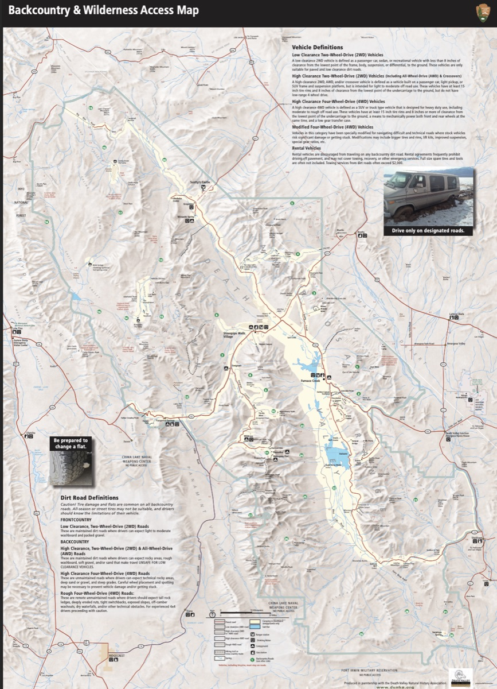
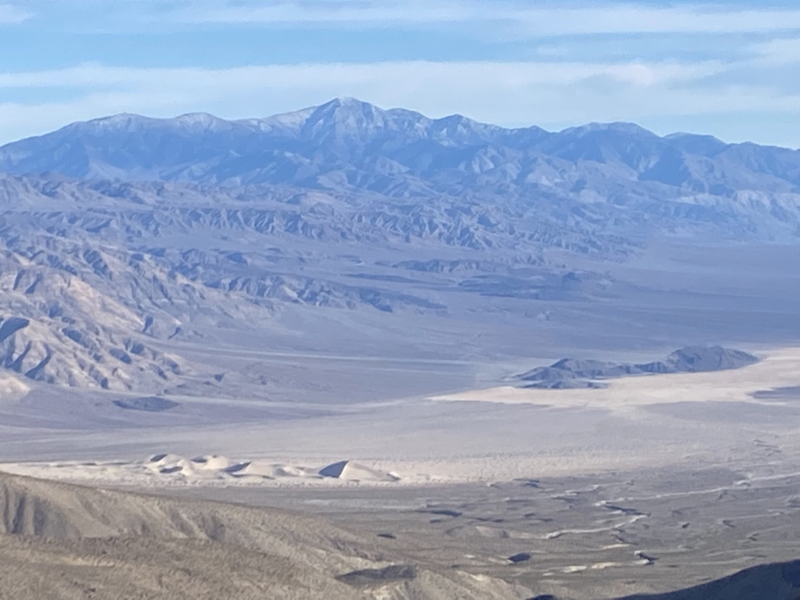
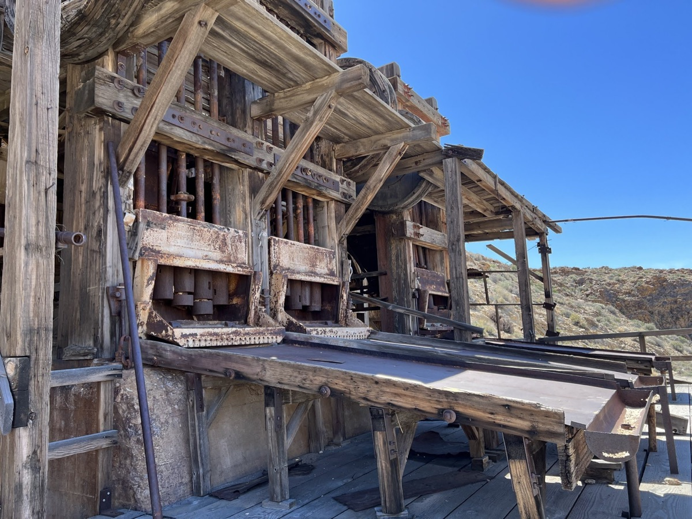
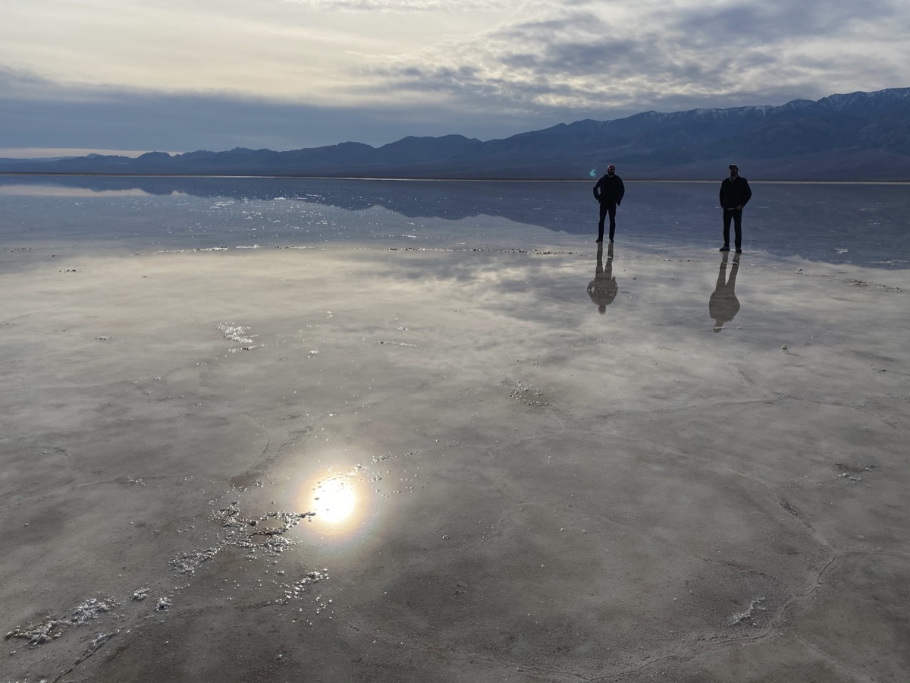
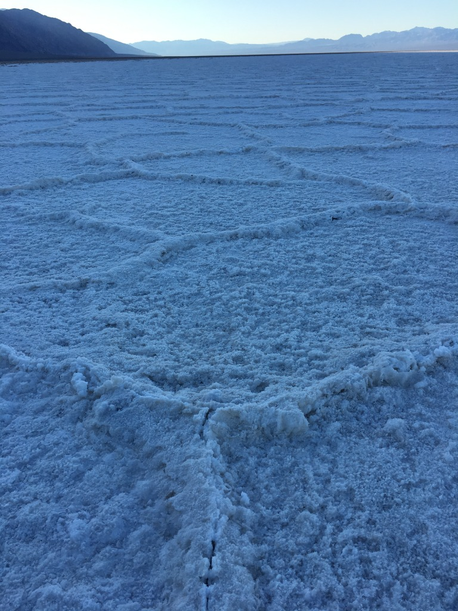
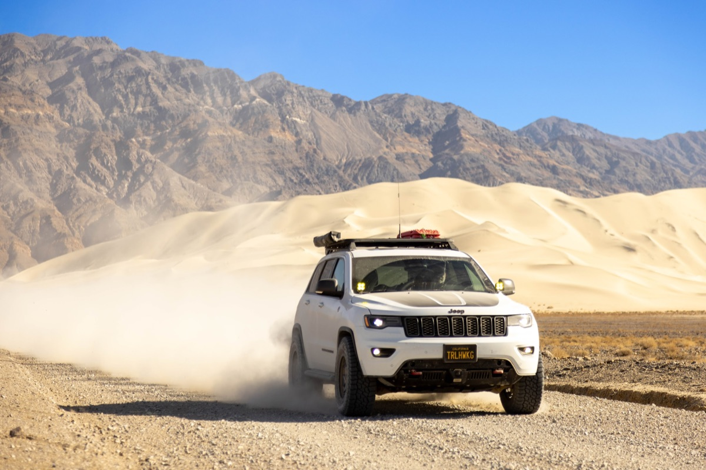

Come join us for four days of exploring Death Valley during prime autumn desert weather. For this trip we will have a very flexible agenda. We will basecamp at the Panamint Springs Resort and hang / explore from there Thursday evening through Sunday.
🍂 Prime Autumn Season in Death Valley
November brings ideal desert weather: daytime highs averaging a pleasant 72–78°F (22–26°C), crisp starry nights around 42–48°F (6–9°C), and optimum trail conditions without the oppressive summer heat or winter freezes.
The idea of this adventure is to be flexible. Join whether you've been to Death Valley many times or if this is your first time. Join whether you're novice to off-roading or have plenty of experience. Join whether you want to tackle challenging trails or just hang around camp and relax.
📍 Trip Information
- Trip Status: Planning
- Trip Leader: Armin Pressler
- Dates: Thursday, November 12 – Sunday, November 15, 2026
- Basecamp: Panamint Springs Resort, CA (Hwy 190)
- RSVP Capacity: 12 rigs
Change of Plans
If you RSVP'd and decide not to go, please update your RSVP to "NOT GOING" to open up a spot for waitlisted members.
Dates
Thursday, November 12 – Sunday, November 15, 2026
Feel free to join for part of the time if you can't make the full trip.
⚠️ Campsite Reservation Required
Important: The trip RSVP below does not reserve a campsite. You must make your own reservation directly with the Panamint campground to attend. Do so early — sites fill quickly in the fall!
When reserving, mention the Overland Bound group to be placed near our convoy.
Trip Logistics & Staging
Meet-up Location (Primary Convoy)
Date: Thursday, Nov 12, 2026
Time: 6:30 AM
Location: McDonald’s at Santa Rita and Highway 580 E
Address: Santa Rita Rd & I-580, Pleasanton, CA 94588
Coordinates: 37.700795, -121.869642
Get DirectionsMid-Point Convoy Meetup (South Bay Group)
Date: Thursday, Nov 12, 2026
Location: Shell Gas Station, Los Banos
Address: 24729 Mercey Springs Rd, Los Banos, CA 93635
Coordinates: 36.929788, -120.841611
Get DirectionsBaseCamp: Panamint Springs Resort
Panamint Springs Resort – Rustic, off-grid resort with camping, RV sites, motel rooms, restaurant, bar, gas, and general store.
Reserve Camping / RV Spot Here
Located on Hwy 190, ~10 miles inside the western entrance of Death Valley National Park.
36°20'21.9"N 117°28'05.2"W
36.339407, -117.468115
⚠️ IMPORTANT Campground Reservations
- Make reservations at the campground as soon as possible – fall weekends fill up fast.
- Mention the Overland Bound group when reserving to be placed near our convoy.
Fire Restrictions & Permits
Current as of September 14, 2026
Fire Restrictions: This trip is based at Panamint Springs and explores Death Valley National Park and surrounding BLM lands. Inside the national park, campfires and charcoal are strictly limited to provided metal fire pits at established campgrounds. Wood collecting is prohibited park-wide—bring your own firewood or purchase it at the resort store.
Permits: A free California Campfire Permit is mandatory for operating portable gas/propane stoves or lanterns on surrounding BLM land and backcountry routes.
Obtain Campfire PermitWeather
Preparing for the trip, check the weather for Panamint Springs and western Death Valley:
Current Weather
Expected Trip Weather
Road Conditions
Weather events can occasionally impact backcountry roads. Before departure, check the Current Road Conditions page on the NPS website for the latest status.
Trip Expectations & Terrain
Overall moderate level with plenty of easy scenic drives from basecamp. Remote backcountry routes may feature washboard tracks, loose rocky washes, and occasional shelf roads—daily options will be customized to match group preferences and driver comfort. High clearance and 4WD are required for select backcountry trails; stock 4x4 and AWD vehicles are fine for main routes and scenic highlights.
Itinerary & Exploration Options
Panamint Springs is an excellent base for exploring western Death Valley. We will organize daily excursions together based on group interest and trail conditions. Here are some of the iconic locations we will explore:
Backcountry Reference Map

Download Backcountry Map (PDF)
Western Death Valley Highlights
- Darwin Falls: A rare year-round desert oasis and flowing waterfall reached via a moderate 2-mile canyon walk.
- Father Crowley Overlook: Breathtaking viewpoint looking across Rainbow Canyon with colorful volcanic strata.
- Saline Valley & Hot Springs: Expansive wilderness valley accessible via technical passes, rewarding travelers with remote desert beauty.
- Cerro Gordo: Historic silver mining ghost town situated high in the Inyo Mountains with panoramic valley vistas.
- Panamint Dunes: Isolated desert sand dunes in northern Panamint Valley, offering peaceful desert solitude.

- Brigg's Cabin (35.99574, -117.16303): Well-known historic backcountry cabin tucked in the Panamint Range.
- Trona Pinnacles: Over 500 dramatic tufa spires rising from Searles Lake basin. Visit BLM site
Wildrose & Emigrant Canyon Area
- Charcoal Kilns & Wildrose Peak: Ten remarkably preserved 1870s beehive kilns built for silver smelters.
- Eureka Mine & Aguereberry Point: Historic mining works and an awe-inspiring viewpoint across Death Valley from 6,433 feet. Watch video tour
- Skidoo Stamp Mill: Remains of a 1900s-era gold milling operation reached via scenic backcountry trails.

- Argenta Mine: Remote historic site with abandoned mine infrastructure and vintage machinery. Watch video tour
Classic Death Valley Attractions
- Mesquite Flat Sand Dunes: Expansive rippling dunes, perfect for sunrise or sunset photography.
- Badwater Basin: North America's lowest elevation at 282 feet below sea level, surrounded by vast salt polygon crusts.


- Keane Wonder Mine: Historic tramway and stamp mill ruins perched against the Funeral Mountains.
- Chloride Cliff: Mineral-tinted canyon views overlooking the valley toward Nevada.
Northern Death Valley Adventures
- Ubehebe Crater: Massive 600-foot volcanic explosion crater with a walkable rim trail.
- The Racetrack: Legendary dry lakebed famous for sailing stones. Route options include:
- Standard washboard route via Teakettle Junction
- Scenic return via Hunter Mountain Road (moderate difficulty, pine forest high country)
- Lippincott Mine Road (extremely challenging, experienced drivers with armor and lockers only)

- Titus Canyon: Iconic one-way canyon route featuring towering canyon walls, petroglyphs, and Leadfield ghost town (subject to NPS opening status).
Frequently Asked Questions & Resort Info
- 🍴 Restaurant & Bar: Full-service dining with hot meals, barbecue, and an extensive craft beer list.
- ⛽ Gas Station & General Store: Gasoline, diesel, firewood, ice, snacks, camp essentials, and topo maps.
- 🏕️ Campsites: Fire pits and picnic tables provided at designated sites. Dry sites do not include hookups.
- 🚿 Showers & Restrooms: Hot showers and flush restrooms are included with campsite fees.
Get Ready Before We Go
🛑 SAFETY REQUIREMENTS
Rear Amber Chase Light and HAM Radio communications are REQUIRED to travel with the group.
Why Amber Chase Lights?
Dusty trails are common – amber lights penetrate dust far better than white or red, helping prevent rear-end collisions in low visibility. Learn more about Why Chase Lights?
HAM Radio
Program to 146.460 MHz (simplex). Handhelds work great even without a license for listening.
If you don't have a ham radio yet, check out our guide to get started.
Other Essentials
- Offline navigation (download GPX / OnX / Gaia maps – no cell coverage in backcountry)
- Extra fuel and drinking water (3–5 gallons extra water per vehicle recommended)
- Off-road tires, full-size spare, recovery gear, and tire inflator
- Cold-weather camp gear for crisp desert nights (down jacket, sleeping bag rated 30°F or lower)
Group Trip Agreement & Waiver
Before signing up, please review the Voluntary Acknowledgment of Risk and Group Trip Agreement. By RSVP'ing and participating in this trip, you certify that you have read, understood, and voluntarily agreed to these terms.